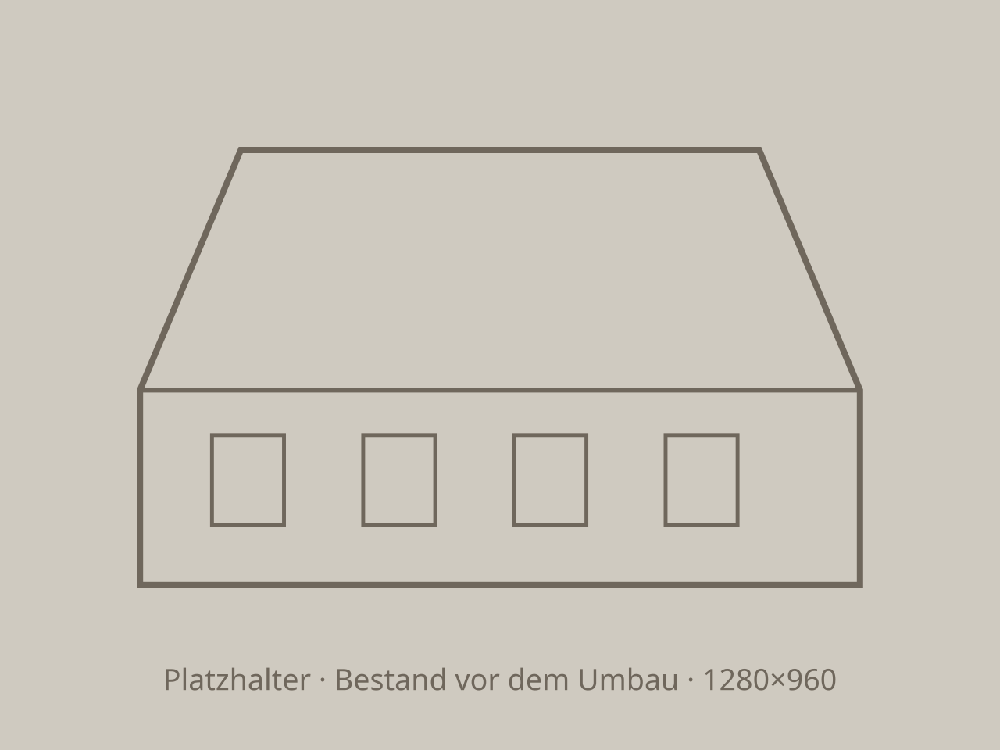

Leitprojekt · Denkmalpflege
Hochstudhaus, von der Bauruine zum Wohnhaus
Totalsanierung eines Bauernhauses von etwa 1860. Ein grosser Teil des Abbruchholzes wurde gereinigt und wieder eingebaut.

- Objekt
- Bauernhaus, ca. 1860
- Bauaufgabe
- Totalsanierung
- Bauzeit
- 2 Jahre
- Massivholz
- 85 m³
- Verleimtes Holz
- 22 m³
Ausgangslage
Drei Jahre Leerstand hatten das Dach geöffnet
Bis eine neue Bauherrschaft gefunden war, wurde das Haus beinahe zur Ruine. Die Dachfläche war eingesunken, die Laube bemoost.

Bestand Nach der Sanierung
Nach der Sanierung
Was hier gebaut ist
Die Laube im Detail

- DachflächeTonziegel, helle Ziegel als Rauten eingesetzt
- LaubenschalungVertikale Schalung, braun lasiert, mit ausgesägten Tiersilhouetten
- BügenTragen das Vordach, aus gereinigtem Altholz gefertigt
- FachwerkAlte Ständer und Riegel, Gefache neu verputzt
Spezifikation
Bauteile und Materialien
Tragwerk
- Bauart
- Hochstud-Ständerbau, Bestand ergänzt
- Neue Bauteile
- Aus Altholz gefertigt und angepasst
- Holzmenge
- 85 m³ Massivholz, 22 m³ verleimtes Holz
Dach
- Form
- Walmdach mit Vordach und Laube
- Deckung
- Tonziegel
- Entwässerung
- Kupferrinnen und Fallrohre
Fassade
- Stirnseite
- Fachwerk mit verputzten Gefachen
- Laube
- Schalung aus Nadelholz, braun lasiert
Haustechnik und Hülle
- Dämmung
- Gebäudehülle vollständig gedämmt
- Heizung
- Erdsonden-Wärmepumpe
Angaben vom Betrieb geprüft.


Ein altes Haus, das bleiben soll?
Wir schauen es uns mit Ihnen an und sagen, was zu retten ist.